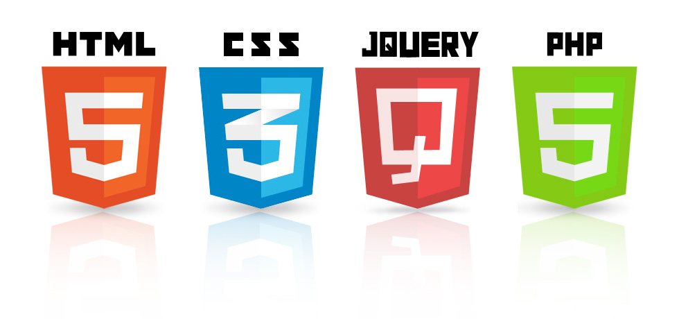
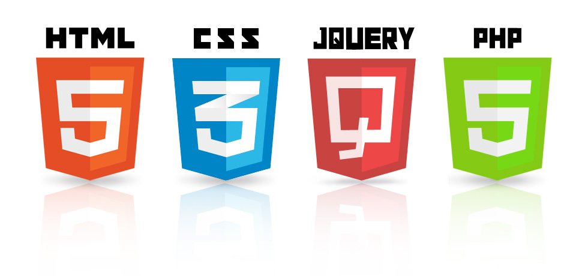

Skills
BootStrap 4

Wordpress

JavaScript/ JQuery
BootStrap 4
Wordpress
JavaScript/ JQuery

Pouring Craft Beer is the first website that I built from just learning the basics of HTML and CSS. It is not mobile ready, but I am extremly proud of it since I put a lot of work and thought into it.
Addax Electric (currently working on) I used a Wordpress Template for this website. After learning Wordpress at The Water Conservation Garden I decided to help a local company with redesigning their old and outdated website.
In this Bootsrap landing page I incorporated some of the skills I learned from the Bootstrap Website. I learned about responsive web design using the framework and documentation. I was inspired to create this website after my recent trip to Vietnam.